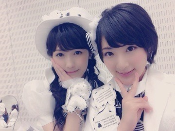
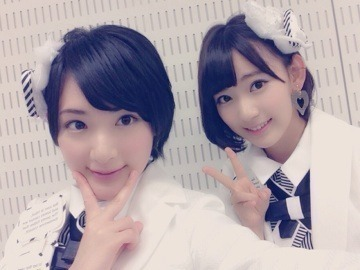
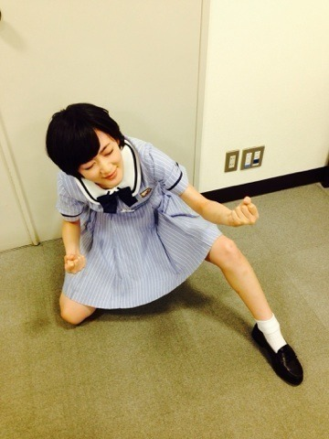

昨日は名古屋にて、真夏の全国ツアーのPRしてきましたっヽ(・∀・)ノ
愛知の方でキャッチ！見てくださった方いますか〜ヽ(・∀・)ノ
皆さん！
この夏は乃木坂46とひとつ思い出をつくりませんか？
永さんと生駒ちゃんと聖母で行ったよ！
ここからは秘蔵写真をみせちゃうよ♡

大天使まゆゆさん♡

さくらちゃん！
乃木坂のこと好きって言ってくれて嬉しい(；ω；)
うふふ♡
あと！！
ジャンポリメンバーで
週刊少年ジャンプグラビアをやらせて頂きます！！
とってもとってもとってもとってもとってもとってもとってもとってもとっても光栄です。
でも正直。
ジャンプにグラビア。人間がやって大丈夫なのかしらと思ってます。
ですが、このジャンプの歴史に携われるこの機会は一生の宝です！！
ジャンプが大好きで、普通にファンだったのに、人生何があるかわかりません。
コスプレして写真に写っています！
中田リーダーも、足立さんも、藤森さんも、スタッフさんも全員本気で、きちんと読者にいいなって思ってもらえる様に頑張りました！
どうかよろしくお願いします！！
ジャンプのグラビアやるよってなった時の気持ちを表したらこうなりました。

くう〜〜〜三└(┐卍^o^)卍ﾄﾞｩﾙﾙﾙﾙ
今週のナルトを見て、人目を気にせず大号泣のあたい。
へばなっ⭐︎